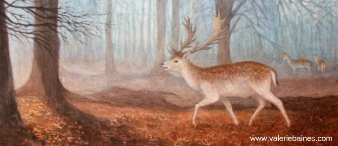
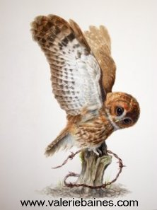
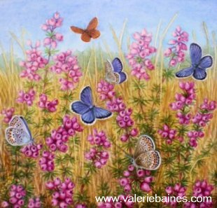
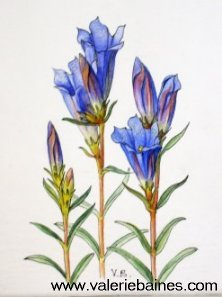
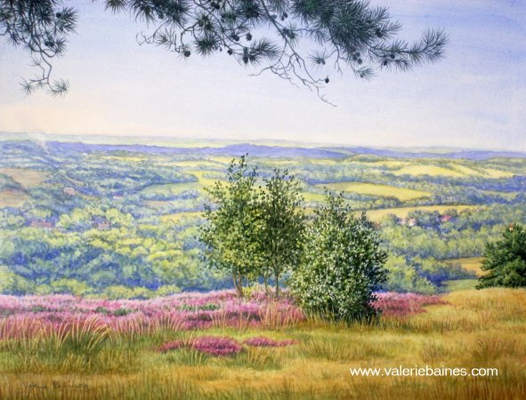

|

|
Past Events - The Magic of Ashdown Forest
The Magic of Ashdown Forest Ashdown Forest Centre, Wych Cross, Forest Row, Sussex, until September 30th 2007  The exhibition has 37 water-colour and oil paintings of the plants, birds, butterflies, animals, trees, botanical flower studies, habitats, and landscapes in the forest to be seen throughout the year. There are also books, cards and prints illustrated by Valerie available. Click here for directions and opening times    The beauties of Ashdown Forest are singular and distinctive: wide views to North and South Downs, sweeping slopes that have never seen the plough and open heathland that has burst into yellow as the gorse comes into bloom. There's nowhere else like it in the South East. It is an unexpected wilderness, a moorland-like touch of Scotland amidst the dense woodlands and small green fields of the High Weald. In the landscape is the characteristic suite of wildlife also found nowhere else. This is the subject of a new exhibition called 'The Magic of Ashdown Forest - paintings of flora, fauna and landscape' by Sussex-based artist Valerie Baines. It opens on 31 March at the Ashdown Forest Centre at Wych Cross near Forest Row. Valerie is past Vice-President of the Society of Botanical Artists and a Fellow of the Linnean Society of London. She has exhibited widely in the UK and overseas and has paintings in many international collections. Her fine touch, combined with a zeal for scientific accuracy, have produced sensational portraits of the Forest done over the last year. A bluebell wood and a trilogy of primrose, ivy and herb robert set the scene for spring. Among the summer plants are the little yellow tormentil, at home on the Forest's light acid soils and a small relative of the Potentillas beloved by gardeners. There is a magnificently vibrant emperor moth spread-eagled on a sprig of heather and a pair of purple emperor butterflies settled on oak leaves against a backdrop of a heathland slope. Locals will recognise this and landscapes of other paintings as views from near the Forest Centre. In one of them a distant wisp of smoke curls up into the sky, with heather in bloom in the foreground. Another shows the autumnal colours of birch in the foreground and East Grinstead's church of St Swithun's behind. Here too is the iconic marsh gentian, with dazzling trumpets of blue that point to the sky well into the autumn. A common blue damselfly grasps a leaf among bog asphodels on a wet Forest heath. Animals from the Forest's woodlands appear as well: a fallow deer struts through the snow, a grey squirrel sniffs at an acorn and a tawny owl flexes its wings as it balances on a stump. As the exhibition title suggests, Valerie has aimed to capture some of the magic of the Forest - described by many as the 'jewel in the crown' of Sussex. The wildlife painted by Valerie are the little jewels that go to make it up. The exhibition is free and will stay open all summer, 1400-1700 in the week and 1100-1700 at weekends and on Bank Holidays. The exhibition ends September 30  Ashdown Forest Centre, Wych Cross, Forest Row, Sussex, RH18 5JP Click here for directions and opening times
©2008 Valerie Baines |

|